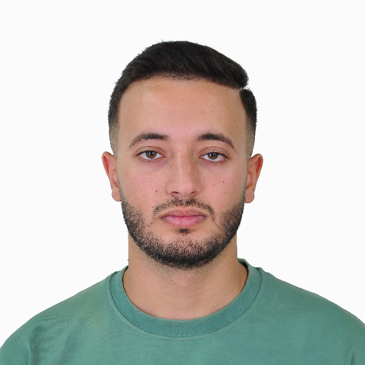

GHEBRIOUA RAYANE
Étudiant en Master Réseaux & Télécommunications, passionné par la sécurité des infrastructures, la virtualisation et les systèmes modernes. Membre actif du club scientifique SCENA.
À Propos
Qui suis-je ?

Bienvenue, je suis Rayane, un étudiant en Réseaux et Télécommunications avec une passion profonde pour la technologie et une approche créative de la résolution de problèmes. Je crois en l'apprentissage continu et à rester à la pointe du paysage technologique en constante évolution.
Fort d'une licence en télécommunications, j'ai conçu et déployé un environnement réseau virtuel reliant deux sites distincts grâce à VMware et GNS3, en y intégrant un pare-feu FortiGate pour assurer une protection optimale et une infrastructure performante.
Mon approche allie expertise réseau et sens de l'innovation pour concevoir des infrastructures sécurisées, adaptées aux besoins spécifiques de chaque projet.
Compétences Techniques
Mon arsenal technologique
Administration Réseaux
Configuration et gestion d'équipements réseau, optimisation des performances, sécurisation et surveillance en temps réel. Maîtrise de Packet Tracer, GNS3 et connaissances Cisco CCNA.
Virtualisation
Mise en place d'infrastructures virtualisées avec VMware Workstation et VMware ESXi. Initiation au cloud computing et aux environnements multi-VMs.
Surveillance Vidéo
Installation et configuration de systèmes de vidéosurveillance CCTV avec monitoring à distance. Intégration dans des architectures réseau sécurisées.
Développement Web
Création de sites web modernes et responsive. Mise en ligne et hébergement. Connaissances en HTML/CSS, Python (Flask), et bases de développement frontend.
Télécommunications
Protocoles de communication, transmission de données et architecture télécom. Maîtrise de la fibre optique (FTTH), du réseau commuté et du traitement du signal.
Support Technique
Diagnostic avancé, résolution proactive des incidents et maintenance préventive des systèmes critiques. Approche méthodique et orientée solutions.
Formation
Mon parcours académique
Bac en Technique Mathématique
Formation couvrant les fondamentaux théoriques en techniques et mathématiques, base solide pour les études d'ingénierie.
Formation en Fibre Optique
Théorie et pratique des principes de transmission optique, techniques de raccordement, épissurage, test, mesure et maintenance des réseaux FO.
Administration & Sécurité Réseaux + CCTV
Configuration, gestion et sécurisation des infrastructures réseau. Installation et maintenance de systèmes de vidéosurveillance CCTV avec monitoring local et distant.
Licence en Télécommunication
Fondamentaux théoriques et pratiques des télécommunications, systèmes de transmission, traitement du signal et technologies numériques. Pratique avec Packet Tracer et GNS3.
Master 2 — Réseaux & Télécommunications
Spécialisation approfondie en architecture réseau moderne, protocoles de nouvelle génération, sécurité des communications et technologies émergentes en télécommunication.
En coursExpériences Professionnelles
Mon parcours terrain
Stage — Étude et Réalisation d'un Réseau Fibre Optique
Participation à l'étude technique et à la mise en œuvre d'un réseau en fibre optique au sein du principal opérateur national des télécommunications.
Technicien Câbleur — Raccordeur Fibre Optique FTTH
Déploiement de réseaux FTTH (Fiber to the Home), raccordement, soudure et tests de liaisons fibre optique en environnement réel.
Projets & Réalisations
Ce que j'ai conçu et construit
Infrastructure Réseau Haute Performance
Conception et implémentation d'une infrastructure réseau d'entreprise avec segmentation VLAN avancée, redondance automatique, et intégration d'un pare-feu FortiGate avec politiques de sécurité renforcées.
Site Web Dynamique
Création d'un site web moderne et responsive avec HTML, CSS et Python Flask. Interface utilisateur soignée, hébergé sur Render pour un accès fiable en ligne.
Contactez-moi
Discutons de votre projet
Restons en contact
Disponible pour des opportunités, collaborations ou simplement un échange.